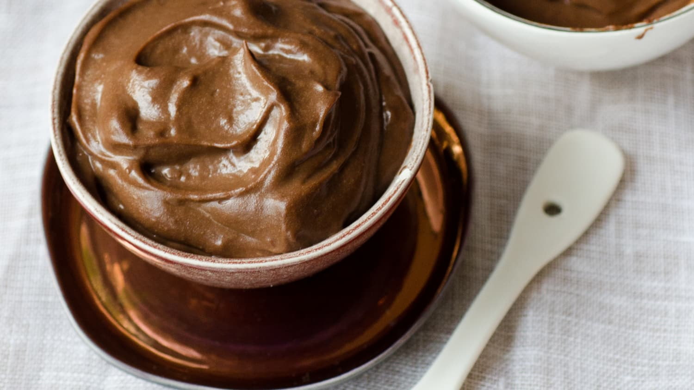

Pudding

Description
Pudding is a type of food that can be either a dessert or a savory (salty or spicy) dish that is part of the main meal.
Ingredients
- Whole milk
- Cornstarch
- Salt
- Granulated sugar
- Egg yolks
- Butter
- Pure vanilla extract
Steps
- To make your vanilla pudding, start by whisking together ¼ cup of the milk with the cornstarch. Set this aside.
- In a medium saucepan, whisk together the rest of the milk, salt, and sugar. Heat the mixture over medium heat until it is steaming, but don’t let it boil.
- While the milk mixture heats up, whisk the egg yolks in a separate bowl. When the milk mixture is hot, slowly stream ½ cup of the hot milk mixture into the egg yolks, whisking constantly. This is called tempering and brings the temperature of the eggs up without scrambling them.
- Slowly add the now-warmed egg mixture back into the pot, followed by the cornstarch slurry. Continue to cook over medium heat, whisking constantly, until the mixture starts to simmer and has thickened.
- Remove the pudding from the heat and whisk in the butter and vanilla.
- You can serve the pudding warm or let it chill before serving it. If you refrigerate it, be sure to place plastic wrap over it, touching the surface of the pudding, so that a skin does not form on the top.